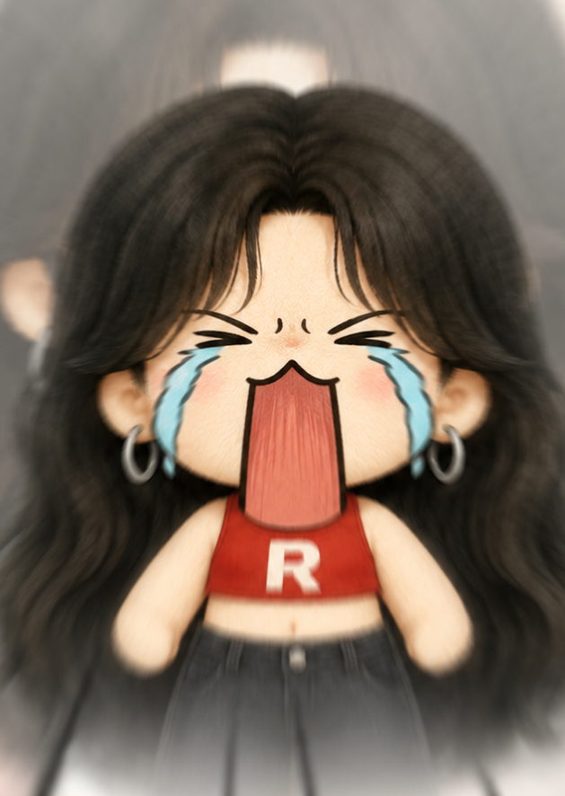

哪里用着不顺手、想要什么功能、碰到什么问题，写下来点发送就到捞鱼那边了，不用跳转、不用登录。
机器人通道没通（可能还没配置），走 GitHub 也行： 帮我打开反馈页（内容已带好，登录后点 Submit）
标签数据默认只存在浏览器里；绑定一个数据库文件后，标签会实时写进文件——随文件带走、跨电脑通用、超级导入导出都认它。
打开 = 选中已存在的 bgm_library.jsonl 直接连接，不会覆盖它 新建 = 选个位置生成文件，当前已打的标签会自动全部写进去，一根毛都不丢
导入成功！不过浏览器选的文件夹只在本次有效——下次重启工具，这些音乐又会变成 💤。 让工具把文件夹记住吧：以后重启自动恢复、新导出的文件自动出现，再也不用超级导入。